Al cinema
Il baseball sul grande schermo
Il cinema ha la straordinaria capacità di farci sognare, di vivere anche per sole due ore la fantastica vita del protagonista.
Il baseball è lo sport per eccellenza in quanto a storie, leggende o imprese presunte impossibili, storie di grandi vittorie o cocenti sconfitte.
Molti considerano il baseball al pari della vita stessa essendo uno sport che richiede forza, agilità, resistenza, intelligenza, gioco di squadra ma c’è anche il momento nel quale sei tu contro tutti.
Questi sono i motivi che hanno spinto grandi registi a portare su pellicola queste storie ed a ricavarne grandi successi.
In ordine cronologico vi elenchiamo di seguito alcuni di questi titoli, cliccate sulla locandina per la scheda, la critica, il trailer e altro dal sito MyMovies:
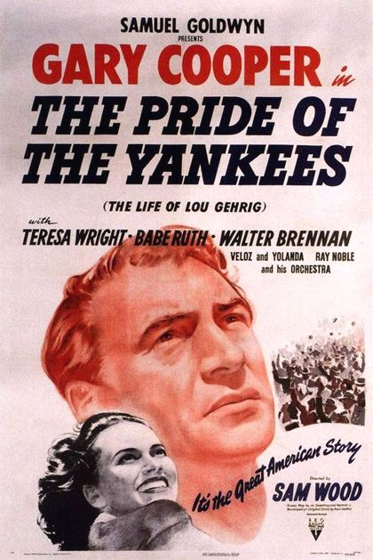
L’IDOLO DELLE FOLLE (THE PRIDE OF THE YANKEES, 1942)
I parenti lo vorrebbero ingegnere, ma la sua passione è il baseball. Studia e si allena, porta alla vittoria la sua squadra in oltre duemila partite, sposa una sua fan. Vivace biografia di Lou Gehrig “The Iron Horse”, per sedici anni asso dei New York Yankees, che, al culmine della gloria sportiva, fu colpito da una micidiale forma di sclerosi (cui darà il nome come morbo di Gehrig) e morì a 37 anni. G. Cooper fece piangere un americano su due con la confessione del proprio stato alla moglie e il discorso di congedo allo Yankee Stadium.
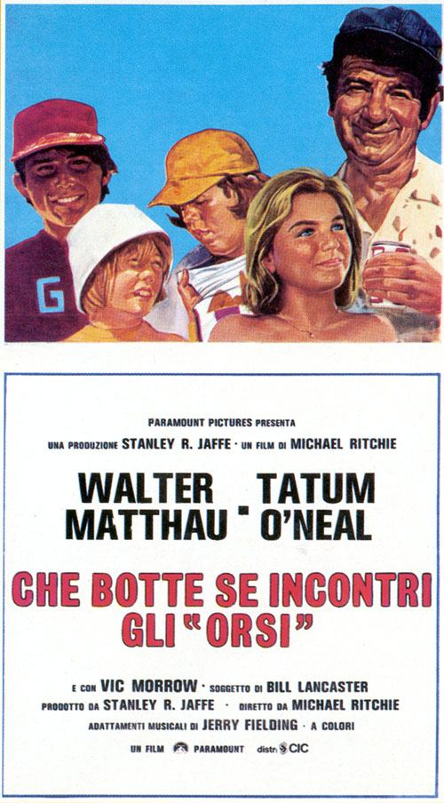
CHE BOTTE SE INCONTRI GLI “ORSI” (THE BAD NEWS BEARS, 1976)
Ex giocatore di baseball diventato allenatore alcolizzato ha il compito di addestrare una scalcinata squadra di strada nel torneo della Little League. Soltanto grazie al combattuto ingresso in squadra, come pitcher, di una quattordicenne più sboccata dei maschietti, i fuoricasta cominciano a vincere una partita dietro l’altra. La sceneggiatura di Bill Lancaster, figlio di Burt, è impregnata e imperniata sul tema dell'”etica vincente” che contribuì al suo grande successo di pubblico nella patria del baseball soprattutto tra gli spettatori giovani di provincia, ma il merito è anche dei duetti Matthau-O’Neal, ben guidati dalla regia. Due film mediocri a seguire.
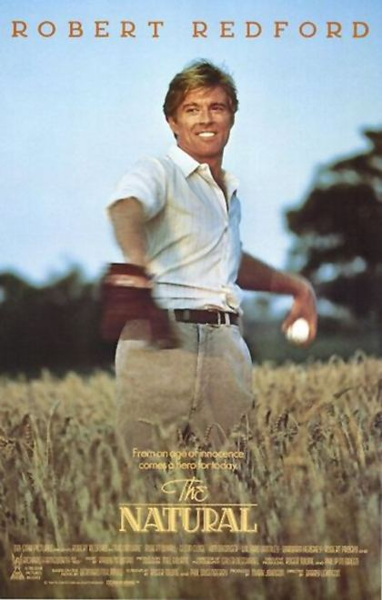
IL MIGLIORE (THE NATURAL, 1984)
Roy, ragazzo semplice e di campagna, dopo la morte del padre tenta la fortuna con il baseball grazie al suo grande dono, il lancio. Un “incidente” lo terrà fermo per vari anni fino a quando non ritornerà in forma per avere ancora un’occasione di mostrare il suo talento in un’altra forma, la battuta, anche grazie alla mazza fatta con il legno dell’albero colpito dal fulmine che uccise il padre.
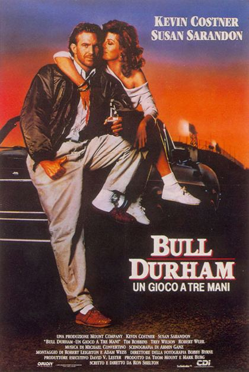
BULL DURHAM, Gioco a tre mani (1988)
Insegnante di lettere, anticonformista e appassionata di baseball, sceglie ogni anno un giovane campioncino dei “Durham Bulls” al quale si dedica, anima e corpo, per farlo maturare in tutti i sensi. Un giorno, però, deve scegliere tra un pivello “con un braccio da un milione di dollari e un cervello da cinque cents” e un intelligente giocatore maturo che non ha mai avuto successo anche perché non l’ha cercato. Entrambi tenteranno di insegnare al giovane “Bue” il baseball, con metodi diversi.
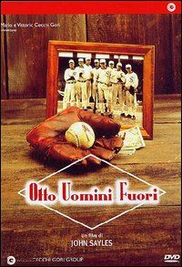
OTTO UOMINI FUORI (EIGHT MEN OUT, 1988)
Nel 1919 ci fu il più grande scandalo del gioco del baseball che vide coinvolti otto giocatori dei Chicago White Sox (denominati poi Black Sox), gli atleti furono accusati di aver venduto alcune partite della finale contro Cincinnati a causa del malcontento generale causato dal presidente che sfruttava i propri giocatori sottopagandoli. I giocatori furono successivamente radiati dalla Lega. Ancora oggi ci sono dubbi sul reale coinvolgimento di Sholess Joe Jackson, risultato poi uno dei migliori in campo.
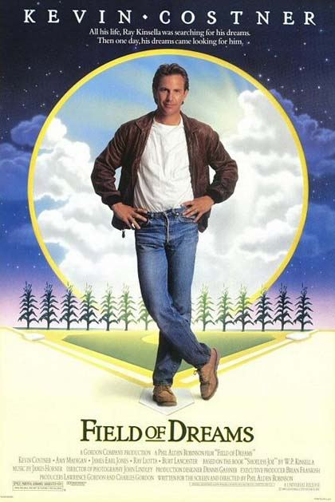
L’UOMO DEI SOGNI (FIELD OF DREAMS, 1989)
Riproponendo lo scandalo dei Black Sox, un coltivatore di mais dell’Iowa sente una voce che gli consiglia di costruire un campo di baseball sul proprio terreno, l’uomo esegue e le conseguenze saranno fantastiche.
Dal romanzo Shoeless Joe di W.P. Kinsella, una storia fantastica di redenzione e di fede in cui umanesimo, misticismo e tifo per il baseball si mescolano con effetti ora suggestivi ora artificiosi.
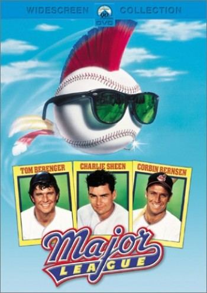
MAJOR LEAGUE, La squadra più scassata della lega (1989)
Il film narra la stagione dei Cleveland Indians, squadra composta da giovani promettenti e veterani mezzi rotti. La proprietaria farà di tutto per far perdere il campionato e potersi così trasferire a Miami, ma proprio questo diventerà lo stimolo giusto per dare la carica ai giocatori.
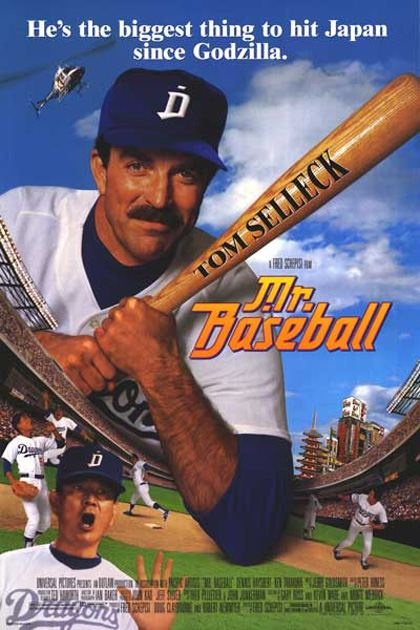
CAMPIONE PER FORZA (MR. BASEBALL, 1992)
Jack, giocatore degli Yankees in declino viene spedito in Giappone per lasciar spazio ad un giovane fenomeno. Giocherà per i Dragons, imparando il baseball e la cultura giapponese con qualche difficoltà ma una donna e successivamente il manager lo aiuteranno a superare il momento e a ritornare negli USA.
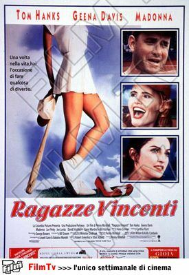
RAGAZZE VINCENTI (A LEAGUE OF THEIR OWN, 1992)
1943: gli uomini sono in guerra, le donne si cimentano nel baseball, allenate da un cinico alcolizzato che insegnerà loro a giocare e da loro imparerà a stare al mondo. Il racconto di partenza è interessante, ma la sceneggiatura non lo sostiene e la regia non la migliora, puntando troppo sul versante sentimentale e trascurando quello umoristico.
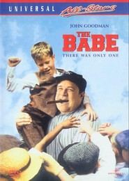
THE BABE, La leggenda (1992)
George Hermann “Babe” Ruth, uno dei più grandi campioni del baseball, un atleta senza precedenti capace di giocare ubriaco meglio di tutti gli altri. Il film narra la vita del giocatore; gli anni del collegio, l’esordio in Major League, la cessione agli Yankees, la maledizione, gli anni di crisi e di rinascita del campione.
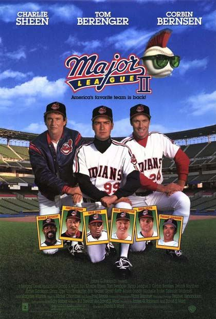
MAJOR LEAGUE, La rivincita (1994)
Tornano in campo gli Indians e i mitici Jack Tayolr, Ricky Wild Thing Vaughn, il temibile Pedro Cerrano e qualche nuovo giocatore. Ancora una volta inizieranno nel peggiore dei modi e ancora una volta grazie alla presidentessa riusciranno a riscattarsi.
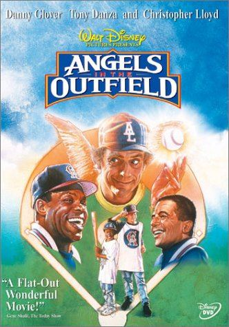
ANGELI (ANGELS IN THE OUTFIELD, 1994)
Los Angeles, un ragazzino orfano tifoso degli Angels, riesce a chiamare a sé un angelo che potrà aiutare la squadra e l’allenatore in crisi ad ingranare e a credere nei propri mezzi.
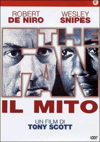
THE FAN, IL MITO (THE FAN, 1996)
Da un romanzo di Peter Abrahams: vite parallele di un campione di baseball, da poco rientrato nei Giants di San Francisco col madornale ingaggio di 40 milioni di dollari, e di un suo fan, commesso viaggiatore di coltelli. Due, e complementari, i temi principali: l’analisi psico-sociologica del fanatismo sportivo, moderna forma dell’idolatria; il patologico bisogno di passare un quarto d’ora sotto i riflettori della pubblicità televisiva.
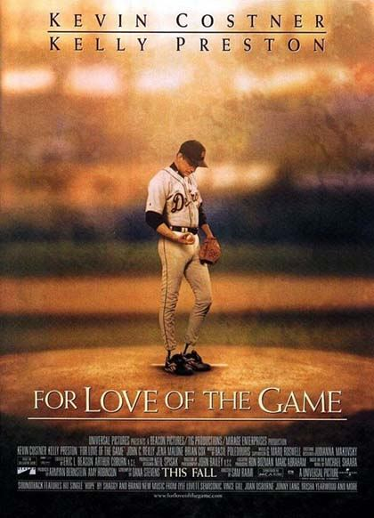
GIOCO D’AMORE (FOR LOVE OF THE GAME, 1999)
Acclamato e famoso campione di baseball, Bill Chapel è al centro dello Yankee Stadium in procinto di effettuare quello che forse è il lancio più importante della sua carriera. Mentre gli spettatori sono in attesa, Bill riflette sulla direzione che ha preso la sua vita e ne rivede gli avvenimenti. Si è innamorato di Jane Aubrey, una giornalista di moda che ha una bambina, ma la trascura perché lo sport e la squadra occupano sempre il primo posto. Visto inutile ogni tentativo, Jane alla fine decide di lasciarlo. Allo stesso tempo, la sua squadra, i Detroit Tigers, sta per essere venduta, e i nuovi proprietari sembrano intenzionati a fare a meno delle prestazioni di Chapel. Bill del resto ha ormai quaranta anni e sa che la sua carriera è alla fine. E poi un giorno lui ha incontrato Jane in compagnia di un editore. Ecco l’ultima azione: un lancio, poi gli altri, quindi quello decisivo, vincente. Bill viene portato in trionfo nello stadio. Poi va all’aeroporto, e lì vede Jane. Avevano mete diverse, ma ora si abbracciano e il loro viaggio diventa unico.
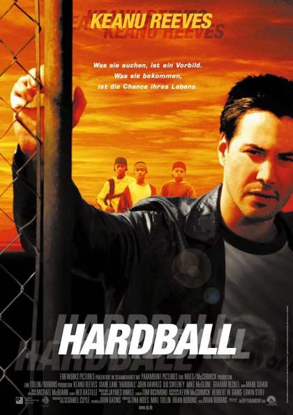
HARDBALL (2001)
Conor O’Neill (Keanu Reeves), haun disperato bisogno di soldi, deve infatti pagare un debito di gioco. In cambio di un prestito accetta così di allenare una giovane squadra di baseball. L’esperienza con gli irrequieti e scalmanati ragazzini, avrà un effetto benefico sulla sua vita.
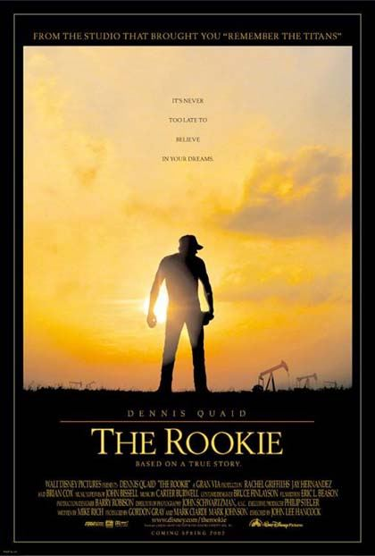
UN SOGNO, UNA VITTORIA (THE ROOKIE, 2002)
Basato su una storia vera. Jim Morris ha sempre sognato di arrivare nelle Major League. Un piccolo incidente gli fece, però, abbandonare la carriera di giocatore di baseball a soli 12 anni. Ora è sposato, ha un figlio e allena un liceo del Texas. Ma non è mai troppo tardi far averare un sogno.
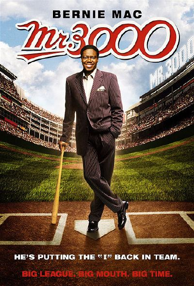
MR. 3000 (2004)
Il giorno in cui realizza la sua battuta numero 3000 Stan Ross pensa di essere entrato nella Hall of Fame del baseball. Ma dopo dieci anni Stan scopre che tre delle sue battute non erano valide. Così, ormai prossimo ai 50 anni, Stan decide di riprendere a giocare per conquistarsi il suo titolo di “Mr. 3000”.
L’AMORE IN GIOCO (FEVER PITCH, 2005)
Lo sconcertante Jimmy Fallon, è un insegnante di liceo. La sua passione gli viene instillata da un parente e 23 anni dopo, l’ormai trentacinquenne Ben è affetto dalla sindrome di Peter Pan, la sua vita ed il suo cuore appartengono ai Boston Red Sox. Il suo incontro con Lindsey (Drew Barrymore), una rampante consulente aziendale lo mettono di fronte alle sue responsabilità: l’amore non fa sconti e Ben farà le spese di tutto quanto riguarda l’amore, vale a dire senso di responsabilità, abbandono dei toni infantili, coinvolgimento emotivo.
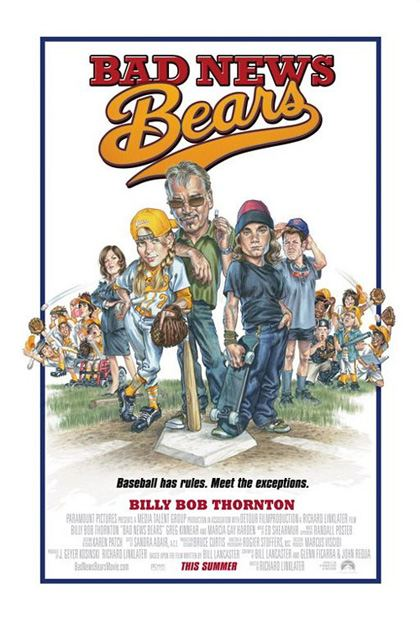
BAD NEWS BEARS (2005)
Buttermaker (Billy Bob Thornton), é l’allenatore di una squadra di baseball giovanile ed ex giocatore di Major League. Non si può dire che il gruppo a sua disposizione sfoggi dei grossi talenti, ma lui cercherà ad ogni modo di trasformarli in una squadra imbattibile.
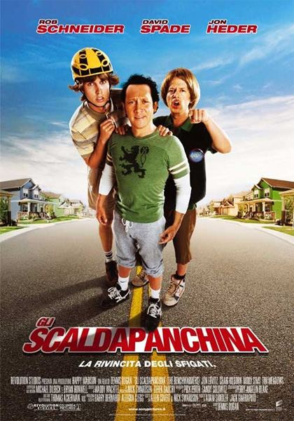
GLI SCALDAPANCHINA (THE BENCHWARMERS, 2006)
Gus, Richie e Clark hanno passato l’adolescenza in panchina aspettando la loro occasione in campo come nella vita. Diversi anni dopo, quella chance arriva. In seguito a un intervento generoso in cui sottraggono Nelson, il figlio di un noto miliardario, dalle grinfie dei bulletti di turno, i tre scaldapanchina giocano una vera partita di baseball. A organizzarla e a finanziarla è Mel, padre di Nelson, in debito morale coi tre trentenni. Il miliardario non baderà a spese ingaggiando un leggendario allenatore, Reggie Jackson. L’allenamento poco ortodosso, con lanci di patate bollenti, conseguirà uno straordinario successo a favore degli scaldapanchina e a svantaggio, per una volta, dei gradassi del mondo.
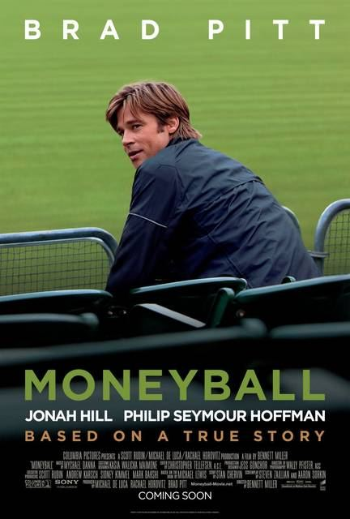
L’ARTE DI VINCERE (MONEYBALL, 2011)
Gli Oakland Athletics sono una buona squadra di baseball che però non può competere con i budget stratosferici di squadre come ad esempio i New York Yankees. Quando al termine di una buona stagione il general manager Billy Beane si vede portar via i suoi tre migliori giocatori, la loro sostituzione diventa impossibile, soprattutto con i pochissimi soldi a disposizione. A questo punto però Beane incontra Peter Brand, giovane laureato in economia che gli dimostra come si possa costruire una squadra vincente basandosi sulle statistiche invece che sui nomi altisonanti. Beane abbraccia la filosofia del ragazzo e rifonda la squadra con nomi sconosciuti o apparenti scarti, lasciando basiti tutti i collaboratori degli Oakland Athletics, compreso l’allenatore Art Howe. All’inizio le cose non sembrano funzionare, ma pian piano il “sistema” messo in piedi da Beane Brand comincia a dare frutti insperati.
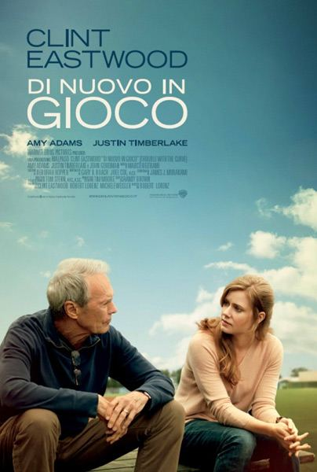
DI NUOVO IN GIOCO (TROUBLE WITH THE CURVE, 2012)
Gus è uno dei migliori scout nel mondo del baseball, da decenni. Con l’avanzare dell’età, però, sta perdendo la vista e facilitando il compito di chi, sul lavoro, vorrebbe fargli le scarpe. Sua figlia Mickey, convinta da un amico di famiglia, si offre di accompagnarlo nel Nord Carolina, per aiutarlo a decidere se un giovane battitore è davvero la promessa che sembra. Da parte sua, però, Gus non ha mai fatto altrettanto per stare vicino alla figlia e la trasferta si rivela per la ragazza l’occasione di mettere il padre alle strette ed esigere una spiegazione.